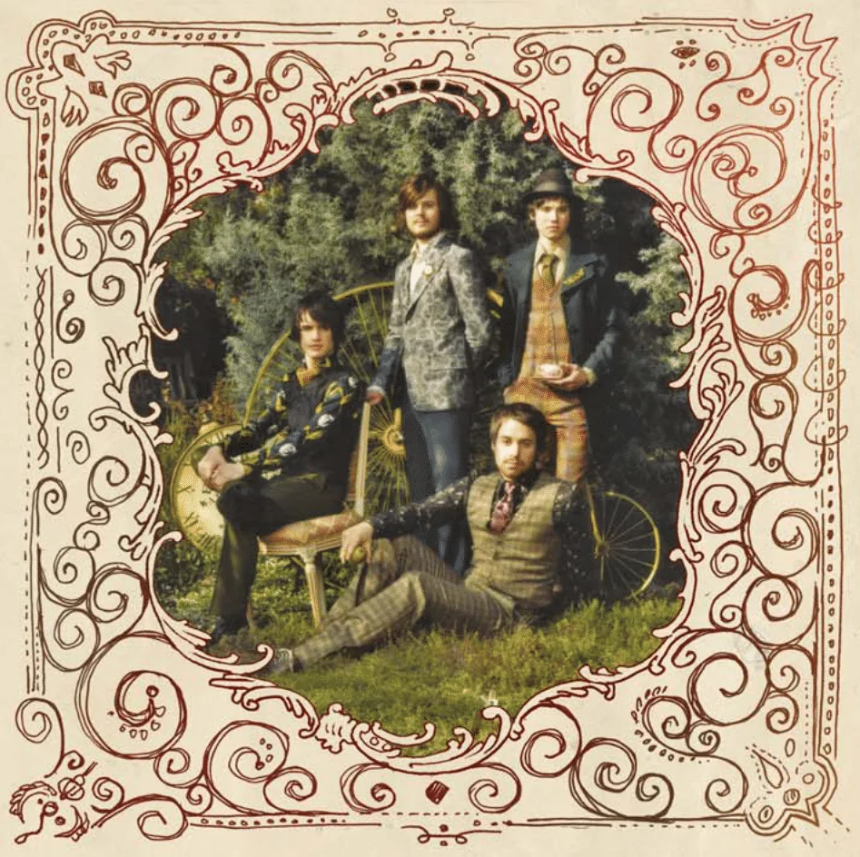

History of Pop-Punk

Origins (1970s–1980s)
The term pop punk was first used by John Rockwell in a New York Times in March 1977 article to describe Tom Petty and the Heartbreakers.
Punk rock has long shared sensibilities with pop music, especially since the late 1970s. In his book Rock and Roll: A Social History (2018), author Paul Friedlander lists the following English artists as representative of the "new wave of pop punk synthesis" that occurred in the late 1970s: Elvis Costello and the Attractions, the Police, the Jam, Billy Idol, Joe Jackson, the Pretenders, UB40, Madness, the Specials, the English Beat. Likewise, among American acts, Friedlander references Talking Heads, Blondie, the B-52s, the Motels, and Pere Ubu.
Bad Religion, formed in 1979, helped to lay the groundwork for the pop-punk style that emerged in the 1990s. They and some of the other leading bands in Southern California's hardcore punk scene emphasized a more melodic approach than was typical of their peers. According to Myers, Bad Religion "layered their pissed off, politicized sound with the smoothest of harmonies". Myers added that another band, the Descendents, "wrote almost surfy, Beach Boys-inspired songs about girls and food and being young(ish)". 13 Their positive yet sarcastic approach began to separate them from the more serious hardcore scene. The Descendents' 1982 debut LP Milo Goes to College provided the template for the United States' take on the more melodic strains of first wave punk. Many pop-punk bands, including Blink-182, cite the Descendents as a major influence.
Underground expansion (late 1980s and early 1990s)
During the late 1980s and early 1990s, pop-punk bands such as Green Day, the Queers, The Mr. T Experience and Screeching Weasel emerged from the record label Lookout! Records with a sound indebted to Buzzcocks, the Ramones, and the Undertones. In August 1992, early 1990s California punk rock and pop-punk was noticed by the magazine Spin when the magazine published a story called "California Screamin'", which is about the early 1990s underground punk rock scene in California, mentioning pop-punk bands like Screeching Weasel and Green Day. Screeching Weasel's 1991 album My Brain Hurts influenced many subsequent pop-punk bands, with bands like Blink-182, Allister and Alkaline Trio citing them as an influence. Social Distortion, known for playing genres like traditional punk and cowpunk, achieved moderate success starting in the early 1990s prior to the 1994 mainstream explosion of pop punk. The band's self-titled album (1990) and Somewhere Between Heaven and Hell (1992) both eventually were certified gold in the United States
Mainstream popularity (mid-1990s to 2000s)
In the wake of Nirvana and grunge breaking through in the early 1990s, California's Green Day and Bad Religion were both signed to major labels in 1993, and by 1994, pop-punk was quickly growing in mainstream popularity, soon before grunge's popularity began to decline. Many punk rock and pop-punk bands originated from the California punk scene of the late 1980s, and several of those bands, especially Green Day and the Offspring, helped revive interest in punk rock in the 1990s. Green Day arose from the 924 Gilman Street punk scene in Berkeley, California. After building an underground following, the band signed to Reprise Records and released their major-label debut album, Dookie, in 1994. Dookie sold four million copies by the year's end and spawned several radio singles that received extensive MTV rotation, three of which peaked at number one on the Modern Rock Tracks chart. Green Day's enormous commercial success paved the way for other North American pop-punk bands in the following decade. In 1999, Dookie was certified diamond by the Recording Industry Association of America (RIAA). The Offspring also achieved mainstream success in 1994 with their album Smash being certified 6× platinum by the RIAA.
MTV and radio stations such as Los Angeles' KROQ-FM played a major role in the genre's mainstream success. The Warped Tour, started in 1995, brought punk even further into the United States mainstream.[42] With punk rock's renewed visibility came concerns among some in the punk subculture that the music was being co-opted by the mainstream. Some punk rock fans criticized Green Day for "selling out" and rejected their music as too soft, pop-oriented and not legitimate punk rock. They argued that by signing to major labels and appearing on MTV, bands like Green Day were buying into a system that punk was created to challenge.
Decline in mainstream popularity (2010s)
Pop-punk lost its mainstream popularity in the early 2010s, with rock bands and guitar-centric music becoming rare on dance-focused pop radio. Some acts, such as New Found Glory, have seen concert attendance numbers decrease steadily. Devon Maloney of MTV wrote that "Pop punk and emo bands don't headline Coachella or Bonnaroo; they rarely, if ever, are even billed on mainstream festival stages," and notes that it has similarly disappeared from the press. The only magazines that featured pop-punk bands were niche publications such as Alternative Press and the occasional teen magazine, while influential pop-punk magazine AMP ceased publication in 2013. The decline in mainstream popularity for the genre, coupled with the closure of many mid-size venues associated with it, resulted in many venues and labels returning to the DIY ethic that helped spawn the punk movement
By the 2010s, many pop-punk bands had folded; "once essentially child stars, their members are now adult musicians hoping to move beyond the teen trappings that gave them careers." Fall Out Boy and Paramore, two groups that achieved mainstream success within the genre, had two number one albums—Save Rock and Roll and Paramore—side by side on the Billboard 200. Fall Out Boy along with other pop-punk bands that peaked during the mid-2000s began experimenting with the more pop side of pop punk, in order to maintain their relevancy and keep the interest of their fanbase while gaining the appeal of the newer generations that may not like their traditional sound or relate as much to the punk themes of the 1970s. Their popularity provoked conversations about the state of the genre; Maloney opined that these records could not be viewed as pop-punk.
In the late 2010s, the genre was influential in the development of emo rap. Many emo rappers gained mainstream attention during this period. In particular, Lil Peep, Lil Uzi Vert, Juice WRLD and XXXTentacion were all vocal about their love for and influence from pop-punk. Emo rapper Wicca Phase Springs Eternal was even a member of the influential 2010s pop-punk band Tigers Jaw. This brought about a revived interest in the genre in popular culture, leading to a number notable artists beginning to release pop-punk songs towards the end of the decade. Emo rapper Lil Aaron and pop singer Kim Petras released the pop-punk song "Anymore" on September 5, 2018. On 13 February 2019, Yungblud and pop singer Halsey released the pop-punk song "11 Minutes" featuring Travis Barker. The song was certified gold in the United States, peaked at number one on the Billboard Bubbling under Top 100 chart and was performed at the 2019 iHeartRadio Music Awards. On June 7, 2019, Machine Gun Kelly, who had been established as a rapper for over a decade, released the pop-punk song "I Think I'm Okay" featuring Yungblud and Travis Barker. His first release in the genre, the song was nominated at the 2019 Billboard Music Awards, and was certified platinum within a year. On July 12, 2019, Cold Hart and Yawns of the influential emo rap collective GothBoiClique, released the pop-punk album Good Morning Cruel World, and on September 18, 2019, emo rapper Lil Tracy released the pop-punk song "Beautiful Nightmare".
See Also
Anika Seter's page on BTS
Charlotte Smalley's page on England
Jarah Marshall's page on Jazz
The Wikipedia Page on Pop-Punk
The Sundae's article on the The Seven Stages of Pop-Punk